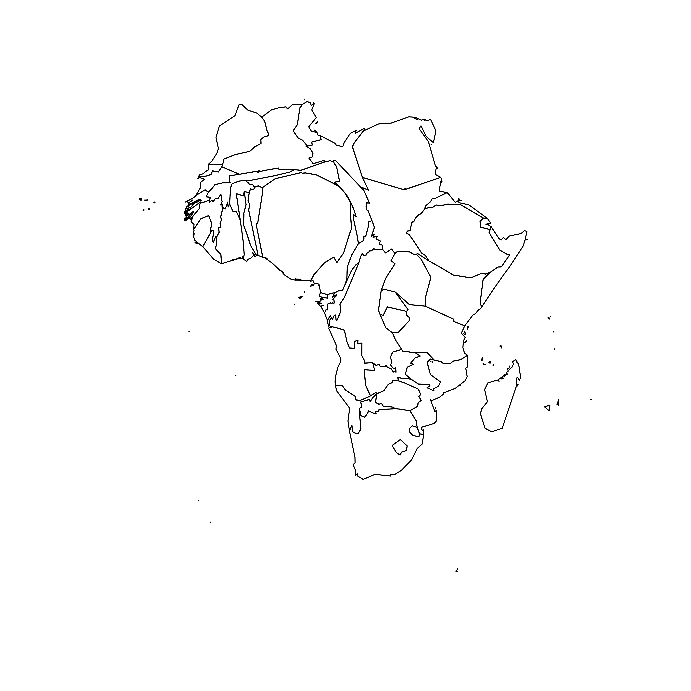
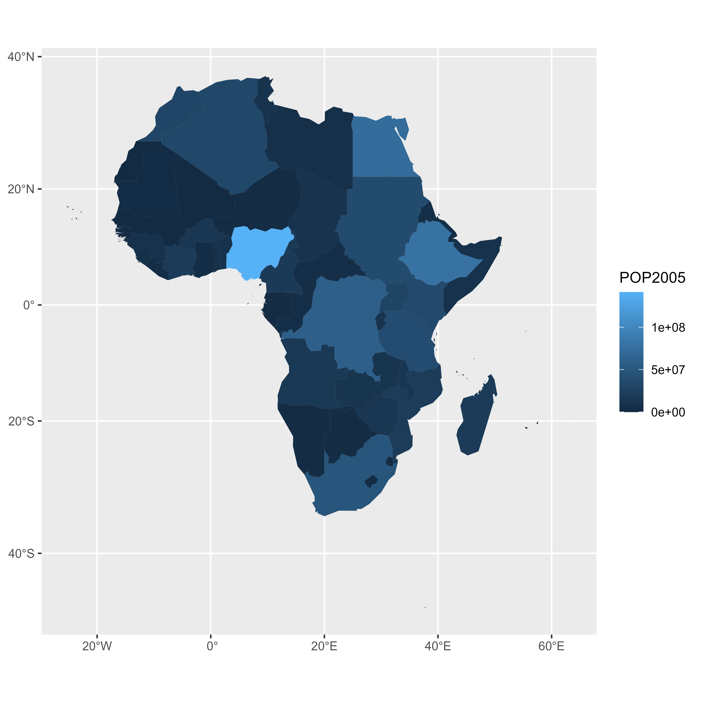

Goal and Packages
At the end of this tutorial, you should get a gif file
containing the following animation.
Before we start, make sure you’ve got the following libraries:

# Load libraries
library(dplyr) # data wrangling
library(cartogram) # for the cartogram
library(ggplot2) # to realize the plots
library(transformr) # needed in order to make gganimate works with sf
library(gganimate) # To realize the animation
library(sf) # read shapefilesA basic map of Africa
Let’s get a geospatial object from a shape file available here. This step is extensively described in this post in case you’re not familiar with it.
All the country boundaries are stored in the world_simpl
object. Let’s load this object, keep only Africa, and draw a basic
representation. This requires only 3 lines of code.

# Get the shape file of Africa, see how on
# https://r-graph-gallery.com/168-load-a-shape-file-into-r.html
# I stored the data on a DATA folder and read it from there
wrld_simpl <- read_sf("DATA/world_shape_file/TM_WORLD_BORDERS_SIMPL-0.3.shp")
afr <- wrld_simpl[wrld_simpl$REGION == 2, ]
# We can visualize the region's boundaries with the plot function
plot(st_geometry(afr))Compute cartogram boundaries
The afr object is a spatial object. Thus it has a
data that gives a few information concerning each
region. You can visualize this info typing af in our
case.
You will see a column called POP2005, providing the
number of inhabitants per country in 2005.
Using this information we can use the cartogram library
to build… a cartogram! Basically, it will
distort the shape of every country proportionally to its number of
inhabitants.
The output is a new geospatial object that we can map like we’ve done before. As you can see, Nigeria appears way bigger on this map, since it has a population of about 141M inhabitants.

# need first to "change" the projection to Mercator (AKA Google Maps): EPSG: 3857
afr <- st_transform(afr, 3857)
# construct a cartogram using the population in 2005
afr_cartogram <- cartogram_cont(afr, "POP2005", itermax = 7)
# A basic representation
plot(st_geometry(afr_cartogram))A nicer representation using ggplot2
Let’s improve the appearance of the previous maps using the ggplot2 library.
The geom_sf() function is used to draw map data. See the
graph
#327 of the gallery for more explanation on choropleth maps with
ggplot2.
# Using the advice of chart #331 we can custom it to get a better result:
ggplot() +
geom_sf(
data = afr, aes(fill = POP2005 / 1000000),
linewidth = 0, alpha = 0.9
) +
theme_void() +
scale_fill_viridis_c(
name = "Population (M)", breaks = c(1, 50, 100, 140),
guide = guide_legend(
keyheight = unit(3, units = "mm"),
keywidth = unit(12, units = "mm"),
label.position = "bottom",
title.position = "top", nrow = 1
)
) +
labs(title = "Africa", subtitle = "Population per country in 2005") +
theme(
text = element_text(color = "#22211d"),
plot.background = element_rect(fill = "#f5f5f4", color = NA),
panel.background = element_rect(fill = "#f5f5f4", color = NA),
legend.background = element_rect(fill = "#f5f5f4", color = NA),
plot.title = element_text(
size = 22, hjust = 0.5, color = "#4e4d47",
margin = margin(b = -0.1, t = 0.4, l = 2, unit = "cm")
),
plot.subtitle = element_text(
size = 13, hjust = 0.5, color = "#4e4d47",
margin = margin(b = -0.1, t = 0.4, l = 2, unit = "cm")
),
legend.position = c(0.2, 0.26)
)
# You can do the same for afr_cartogramCompute several intermediate maps

The goal being to make a smooth animation between the 2 maps, we need to create a multitude of intermediate maps using interpolation.
This is possible by using the itermax parameter on the
cartogram_cont() function. We can compute several
intermediate cartograms and consider each one of them as a frame.
At the end we’ve got a big data frame which contains enough information to draw 30 maps. Three of these maps are presented above.
# Loop to create states
afr$id <- seq(1, nrow(afr))
afr$.frame <- 0
# Store the loop on this object
dt1 <- afr
afr_cartogram <- afr
for (i in 1:15) {
afr_cartogram <- cartogram_cont(afr_cartogram, "POP2005", itermax = 1)
afr_cartogram$.frame <- i
dt1 <- rbind(dt1, afr_cartogram)
}
# Arrange in the inverse order now to go back to the initial state
dt2 <- dt1 %>%
arrange(desc(.frame), id) %>%
mutate(.frame = -1 * .frame + 31)
dt <- bind_rows(dt1, dt2) %>% arrange(.frame, id)
# check a few frames
ggplot() +
geom_sf(data = dt %>% filter(.frame == 0), aes(fill = POP2005), linewidth = 0)
ggplot() +
geom_sf(
data = dt %>% filter(.frame == 5), aes(fill = POP2005),
linewidth = 0
)
ggplot() +
geom_sf(
data = dt %>% filter(.frame == 15), aes(fill = POP2005),
linewidth = 0
)Make the animation with gganimate
The last step consists at building the 30 maps and compile them in a
.gif file. This is done using the gganimate library. This
library uses another functions transition_states() and
ease_aes(). A new plot is made for each frame, that allows
us to build the gif afterwards.
# Remove CRS due to a bug on gganimate
dt <- st_set_crs(dt, NA)
p <- ggplot(dt) +
geom_sf(aes(fill = POP2005 / 1000000, group = id), linewidth = 0, alpha = 0.9) +
theme_void() +
scale_fill_viridis_c(
name = "Population (M)",
breaks = c(1, 50, 100, 140),
guide = guide_legend(
keyheight = unit(3, units = "mm"),
keywidth = unit(12, units = "mm"),
label.position = "bottom",
title.position = "top", nrow = 1
)
) +
labs(title = "Africa", subtitle = "Population per country in 2005") +
theme(
text = element_text(color = "#22211d"),
plot.background = element_rect(fill = "#f5f5f4", color = NA),
panel.background = element_rect(fill = "#f5f5f4", color = NA),
legend.background = element_rect(fill = "#f5f5f4", color = NA),
plot.title = element_text(
size = 22, hjust = 0.5, color = "#4e4d47",
margin = margin(
b = -0.1, t = 0.4, l = 2,
unit = "cm"
)
),
plot.subtitle = element_text(
size = 13, hjust = 0.5, color = "#4e4d47",
margin = margin(
b = -0.1, t = 0.4, l = 2,
unit = "cm"
)
),
legend.position = c(0.2, 0.26)
) +
# from gganimate
transition_states(.frame) +
ease_aes("cubic-in-out")
# Make the animation
animate(p, duration = 5)
anim_save("Animated_Cartogram_Africa.gif", p, duration = 5)Done! You should have the gif in your working directory.
Conclusion
This post uses several concepts that are extensively described in the R graph gallery:
- The choropleth map section gives several examples of choropleth maps, using different input types and several tools
- The cartogram section gives further explanation about cartograms
- The animation section explains more
deeply how
tweenRandgganimatework - The map section is a good starting point if you are lost in the map related packages jungle
If you are interested in dataviz, feel free to visit the gallery, or to follow me on twitter!
Related chart types